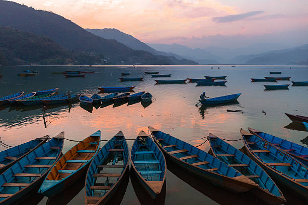
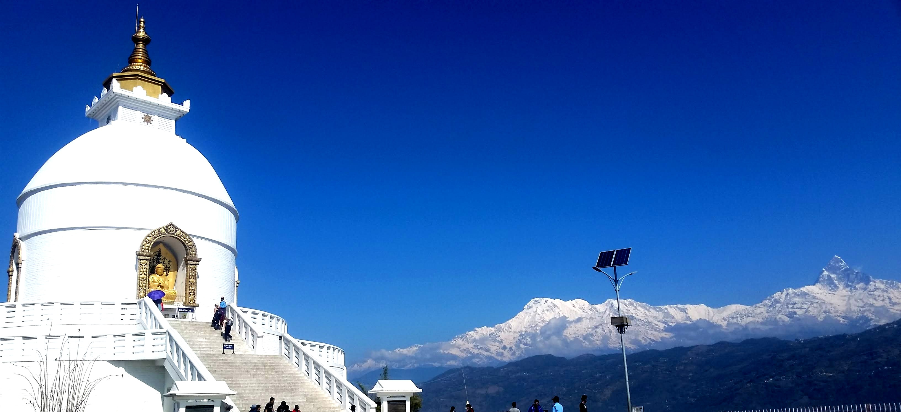
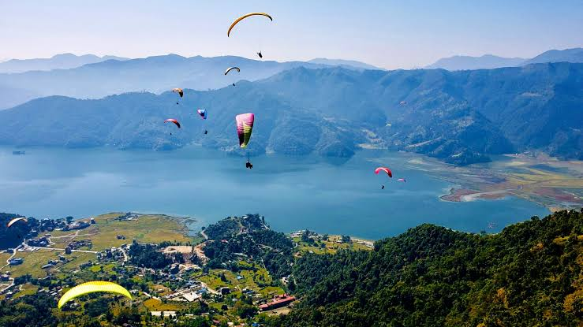
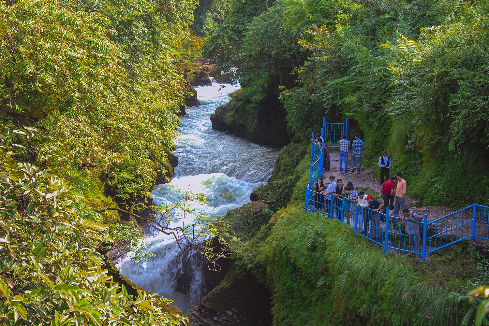
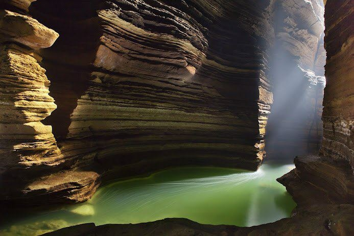
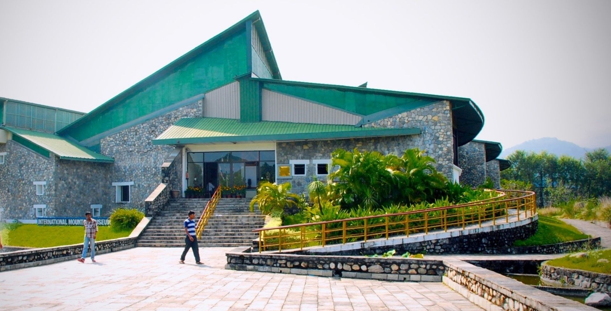
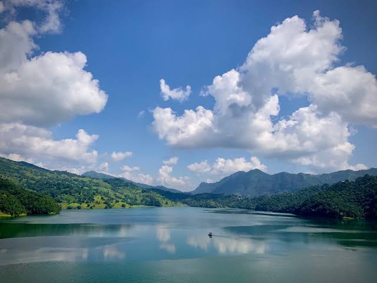
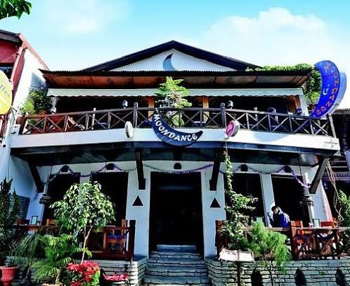
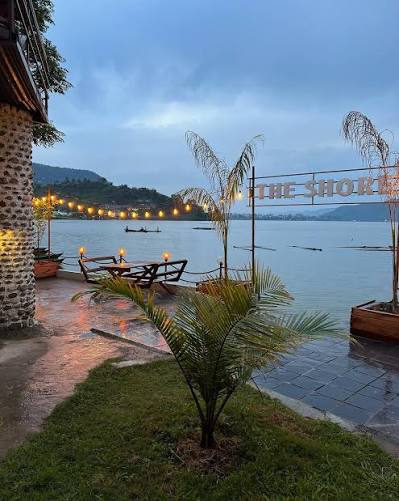
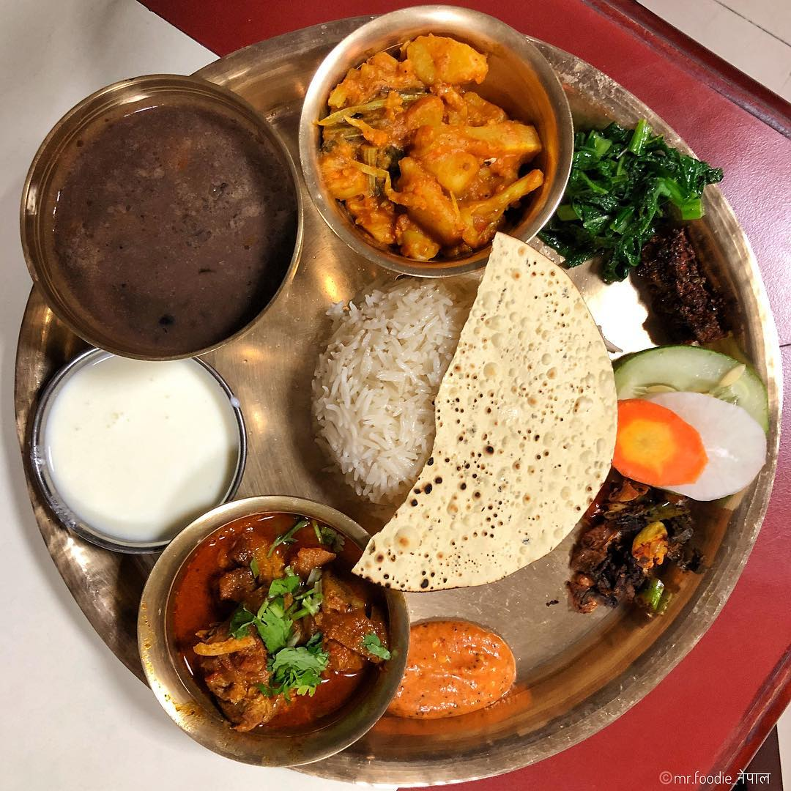

Phewa Lake
Enjoy a peaceful boat ride and admire the reflection of the mountains.
Travel Destination
A calm lakeside city surrounded by mountains, adventure, and unforgettable views.
Explore the DestinationWelcome to Pokhara
Pokhara is one of Nepal's most beautiful travel destinations. It is known for the peaceful Phewa Lake, fresh mountain air, and spectacular views of the Annapurna range.
Visitors can enjoy a relaxing boat ride, explore local culture, walk through lively streets, or take part in exciting activities such as hiking and paragliding.
Best time: October to April
Known for: Lakes, mountains, and adventure
Ideal trip: 3 to 5 days
Must-see locations
Add your destination pictures in the spaces below.

Enjoy a peaceful boat ride and admire the reflection of the mountains.

Experience a quiet hilltop view overlooking the lake and the city.

Watch a memorable sunrise and see the Himalayas from above.

See the powerful waterfall and discover the natural tunnel nearby.

Explore a fascinating cave located close to Devi's Fall.

Learn about the world's highest mountains and Himalayan culture.

Spend a quiet day beside a less crowded lake surrounded by green hills.
Taste of Pokhara
Try local flavors, fresh ingredients, and memorable meals at these popular restaurants.

Nepali and local cuisine
Enjoy traditional Nepali dishes, warm service, and a relaxed atmosphere in Lakeside.

Cafes and international food
A popular stop for pizza, burgers, coffee, and a comfortable meal after exploring the city.

Local favorite
Sample a satisfying Thakali set with rice, lentils, vegetables, and flavorful pickles.
Make your visit special
Plan your journey
A few simple choices can make your visit more comfortable and meaningful.
Carry comfortable shoes, light layers, sunscreen, and a reusable water bottle.
Keep the surroundings clean and be respectful of local customs and communities.
Leave room in your schedule to enjoy the scenery instead of rushing between places.